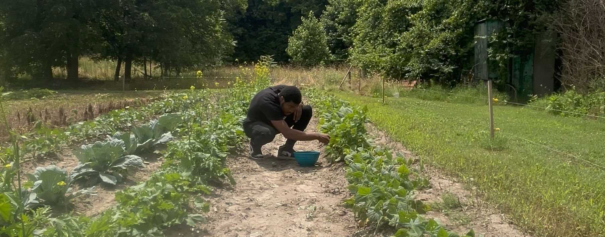

Marqua Walton

Objective:
Provide a company with skills of HTML, CSS, and JavaScript. Basic concepts of those skills I have the ability to complete beginner task but am always learning more about the skills.
Education:
- Wakefield High School
- Virginia Weslyevan University
- Lone Star College
Work experience:
- Dynamic Gymnastics(2024 - current)
- Instruct gymnastics classes for boys and girls of various skill levels
- Develop lesson plans that teach basic to intermediate skills on all the gymnastics apparatus including vault, bars, beam, floor
- Provide a safe and encouraging enviornment for learning and skill development
- Kidventure(2023 - 2024)
- Developed, Implemented, and Oversaw after schools programs to align with organizational goals and meet student expectations
- Formulated strategic long-term plans to enhance program offerings and ensure sustainability
- Proficient in effective communication with students, parents, staff, and community partners, while resolving conflicts and managing challenging situations with respect and courtesy
- Marksman Security(2023 - 2024)
- Effectively prioritized and managed tasks while coordinating multiple dispatch requests in a dynamic and high-demand enviornment
- Utilized dispatch software and GPS systems to monitor and track vehicles/personnel
- Maintained communication with drivers and field staff to provide updates, directions, and instructions
Skills:
- HTML5/CSS
- Project Planning
- Microsoft Office Suite (Word, Excel, Outlook)
Certifications:
- Private Security License
- CPR
- Responsive Web Design
Contact Me